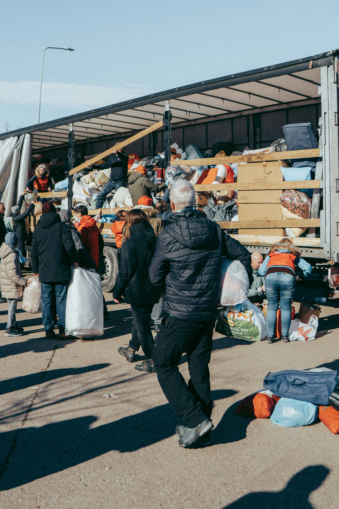
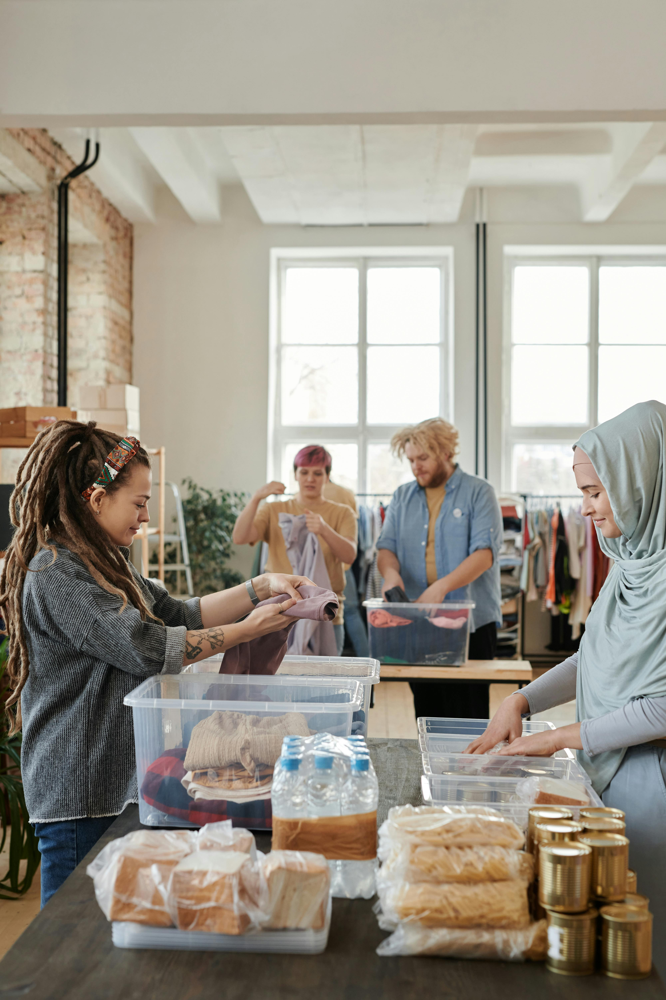
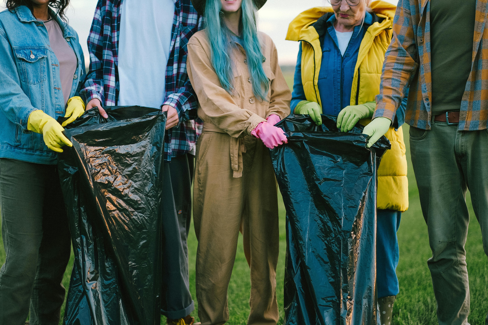

Українська
Волонтерська Служба



Про нас
Українська Волонтерська Cлужба — громадська організація, заснована у 2017 році. Наша мета — розвивати культуру волонтерства та взаємодопомоги в Україні. З початку повномасштабної російсько-української війни ми надаємо різнобічну підтримку та продовжуємо створювати можливості для волонтерського руху.
Волонтерство — це те, що допомагає нам, громадянам, змінювати країну зсередини та власноруч творити майбутнє, втілюючи в життя мрію про успішну Україну, де кожен має рівні можливості й може брати участь у вирішенні соціальних проблем. Завдяки волонтерству кожен може докласти зусиль для наближення перемоги та допомогти тим, хто цього потребує.
Саме тому ми підтримуємо, навчаємо та об’єднуємо волонтерів з організаціями, яким потрібна допомога. Ми завжди поряд, щоб бути опорою та підтримкою для тих, хто дбає про інших.
ВІЗІЯ
Ми прагнемо створити Україну, у якій кожна людина — незалежно від віку, статі, соціального статусу, культурного чи етнічного походження — може реалізувати себе в допомозі іншим.